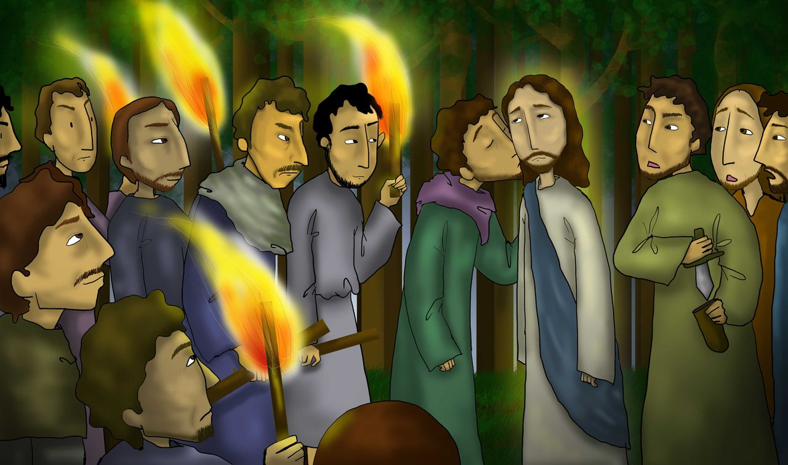
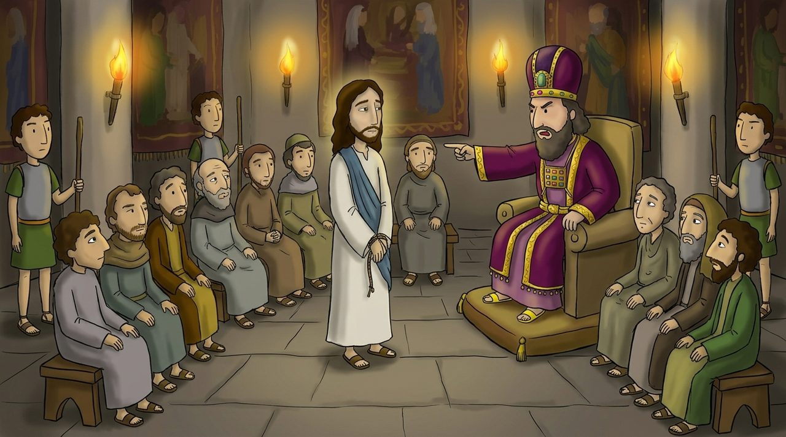
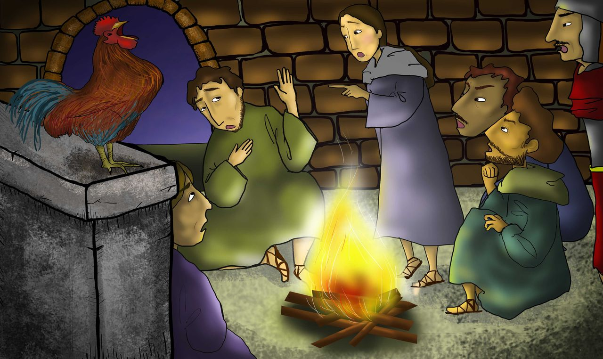

Нажми на жёлтые слова, чтобы узнать их значение. Кнопка 🔊 читает вслух.
Что мы узнаем сегодня?
Мы узнаем, как Иисус молился в Гефсиманском саду.
Мы узнаем, что Иисус был схвачен и осуждён ради нас.
На примере оступившегося Петра мы узнаем о слезах покаяния.
Сцена 1 · Матфей 26:36–46
Молитва в Гефсимании
Иисус пошёл в и молился с очень грустным и скорбящим сердцем: «Отче, если возможно, пусть эта чаша минует Меня».
Потом Он продолжил: «Но пусть будет не как Я хочу, а как Ты хочешь». А ученики не смогли бодрствовать и уснули.

Сцена 2 · Матфей 26:47–56
Схваченный Иисус
Иуда привёл людей с мечами и кольями. Он указал на Иисуса .
Когда один ученик выхватил меч, Иисус сказал: «Верни меч на место. Если Я попрошу Отца, Он пошлёт ангелов. Но Писание должно исполниться». После этого все ученики убежали.

Сцена 3 · Матфей 26:57–68
Иисус на суде
Иисуса отвели к первосвященнику Каиафе и устроили . Хотя лжесвидетели говорили неправду, Иисус молчал.
Первосвященник спросил: «Ты ли Христос, Сын Божий?» Иисус ответил: «Ты сказал». Тогда они стали плевать Иисусу в лицо и бить Его. Иисус терпел это ради нас.

Сцена 4 · Матфей 26:69–75
Плачущий Пётр
Пётр издали следовал за Ним и был во дворе. Когда люди сказали: «И ты был с Иисусом», Пётр трижды ответил: «Я не знаю этого Человека!»
В этот момент пропел . Пётр вспомнил слова Иисуса, вышел вон и горько заплакал. Это были слёзы .
Стих недели
«Но пусть будет не как Я хочу, а как Ты хочешь».
Матфей 26:39 · простыми словами для детей
«Но пусть будет не как хочу, а как ».
Выбери слова для пропусков по порядку.
Словарик
Нажми и узнай значение
Проверь себя
4 вопроса
Давай подумаем
Почему Иисус молился: «Пусть будет, как Ты хочешь»?
Что чувствовал Иисус, когда ученики уснули?
Что я делаю, когда ошибаюсь, как Пётр?
Нарисуй
Нарисуй Иисуса, молящегося на коленях в Гефсиманском саду.
Нарисуй на бумаге и отправь фото учителю
Когда ты будешь молиться, как Иисус?
Помолимся вместе
Иисус, спасибо Тебе за то, что, несмотря на сильные страдания, Ты сказал: «Пусть будет, как Ты хочешь» и пошёл на крест ради нас. Помоги и мне подчиняться воле Божьей больше, чем своим желаниям. Когда я оступаюсь, как Пётр, пусть я не прячусь, а каюсь и возвращаюсь к Тебе. Молюсь во имя Иисуса Христа. Аминь.